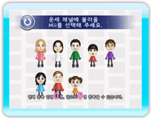
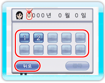

『즐거운 하루 운세 채널』을 처음 이용할 때는 플레이어의 캐릭터인 Mii와 그 Mii의 생년월일을 등록할 필요가 있습니다. 운세는 이때 등록된 생년월일을 토대로 알아보게 됩니다. Mii가 등록되어 있지 않은 상태에서 채널을 시작하면 Mii 등록 화면이 가장 먼저 표시되며, Mii는 나중에 추가로 등록하거나 삭제할 수 있습니다.
4 |
Mii 등록하기 |
 |
※Mii가 등록되어 있는 상태에서 채널을 시작하면 종합 운세 화면이 가장 먼저 표시됩니다(→P6: 운세 종합 점수 발표). ● Mii 등록하기

1. Mii를 선택한다.
Wii 본체에 들어 있는 Mii를 최대 6명까지 등록할 수 있습니다. 등록하고 싶은 Mii를 포인트하고

2. Mii의 생년월일을 등록한다. Mii를 선택한 다음에는 생년월일을 등록합니다. ● 『Mii 채널』에서 생일을 등록한 경우 ※『Mii 채널』에서 생일을 등록했더라도 다른 생일을 등록할 수 있으며, 본 채널에서 다른 생일을 등록해도 『Mii 채널』의 생일에 영향을 주지는 않습니다. ● 『Mii 채널』에서 생일을 등록하지 않은 경우 ● Mii를 추가로 등록·삭제하기 「P.5: 메인 화면 설명」을 읽어 주세요. ※등록한 Mii가 『Mii 광장』에서 사라지면 본 채널에 등록한 Mii의 데이터도 삭제됩니다. |
 |
 |
 |